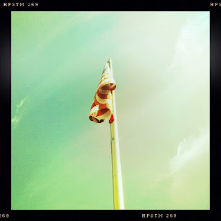

Recovered weblog entry
Flag

Not much inspiration today. I just wandered around until something worked. At least the stratus clouds played nicely in the background.
Sidenote: I'm becoming more of a fan of the Jimmy lens.
Lens: Jimmy
Film: Pistil